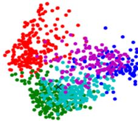
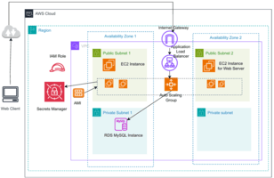
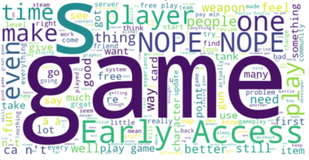
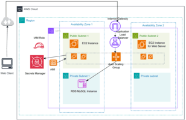
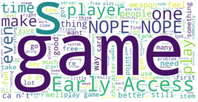
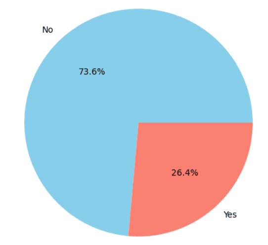
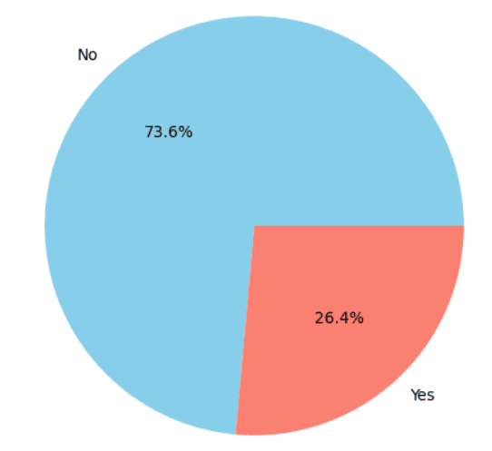

Projects



 



 


Reddit Comments to Post Relevance Analysis
Focus: NLP, embeddings, clustering relevance of Reddit comments.
Tech: Python, Topic Modeling, Transfer Learning, API
Hybrid model combining semantic similarity, engagement, and sentiment to analyze and rank the relevance of Reddit comments to posts.
Global Greenhouse Gas Emissions Dashboard
Focus: Visualization of GHG trends, carbon tax policy, temperature impact.
Tech: Plotly Dash, Pandas, Choropleth maps
Interactive dashboard visualizing global greenhouse gas emissions trends and analyzing the impact of various carbon tax policies.
Stack Overflow Users Survey Analysis
Focus: Demographic and tech preference insights through Power BI.
Tech: Power BI, SQL, DAX
Stack Overflow user survey data dashboard to derive insights on demographic trends and technology preferences using Power BI with drill-down features.
Per-Capita Greenhouse Gas Emissions
Focus: Emissions analysis and prediction.
Tech: BigQuery, Looker Studio, Machine Learning, GCP
Prediction model for per-capita greenhouse gas emissions using machine learning algorithms, achieving 96% accuracy.
Scalable Student Records Web App on AWS
Focus:CRUD app with AWS best practices.
Tech:AWS, Virtual Servers, Relational Database, Load Balancing, Virtual Networking, Access & Credential Management
Scalable web application for managing student records using AWS services. Implemented auto-scaling and load balancing for high availability and peak performance.
Sentiment Analysis on Gamesphere Reviews
Focus: Classifying sentiment in reviews.
Tech:NLTK, Scikit-learn, Pandas
Sentiment analysis on gaming reviews to classify sentiments into positive, neutral, or negative categories. Achieved 84% accuracy, optimized using GridSearchCV for hyperparameter tuning.
Emotion Classification Using NLP
Focus: Classifying text into emotion categories.
Tech:NLP, Topic Modeling, traditional ML models.
Classification of text into emotion categories (e.g., joy, anger, sadness) using NLP techniques. Achieved 85% accuracy through strong feature engineering and model selection.
Customer Churn Analysis
Focus: Predicting customer churn.
Tech: Python, SciKit-learn, Ensemble models, Pandas
Machine learning model to predict customer churn and identify at-risk customers. Focused on maximizing business impact by providing actionable insights for retention strategies.
Personal Portfolio Website
Focus: Creating an interactive web presence.
Tech:Web Development, Visual Studio Code
Multi-page portfolio website featuring sections like Home, Bio, Portfolio, Resume, and Contact. Focused on clean UI and smooth navigation to showcase professional projects and personal brand.